품질경영기사 (2021-09-12 기출문제)
1과목: 실험계획법
1. 23형 요인배치실험 시 교락법을 사용하여 다음과 같이 2개의 블록으로 나누어 실험하려고 한다. 블록과 교락되어 있는 교호작용은?
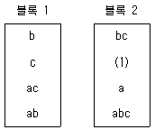
- A×B
- A×C
- A×B×C
- B×C
(정답률: 67%)

2. 반복이 없는 모수모형 4요인 실험에서 A, B, C, D 의 수준수가 l=3, m=4, n=2, q=3 일 때, 교호작용 A×B×C의 자유도는?
- 6
- 9
- 12
- 24
(정답률: 61%)
3. 라틴방격법에 대한 설명 중 틀린 것은?
- 4×4 라틴방격법에서 오차의 자유도는 6이 된다.
- 라틴방격법은 교호작용이 있는 실험에 적합하다.
- 라틴방격법은 실험횟수를 절약할 수 있는 일부실시법의 종류이다.
- 초크레코라틴방격이란 서로 직교하는 라틴방격을 3개 조합한 것이다.
(정답률: 54%)
4. 요인의 수준과 수준수를 택하는 방법으로 틀린 것은?
- 현재 사용하고 있는 요인의 수준은 포함시키는 것이 바람직하다.
- 실험자가 생각하고 있는 각 요인의 흥미영역에서만 수준을 잡아준다.
- 특성치가 명확히 나쁘게 되리라고 예상되는 요인의 수준은 흥미영역에 포함시킨다.
- 수준수는 보통 2~5수준이 적절하며 많아도 6수준이 넘지 않도록 하여야 한다.
(정답률: 53%)
5. 2요인 교호작용에 관한 설명으로 틀린 것은? (단, 요인 A, B는 모수요인이다.)
- 교호작용이 유의하지 않으면 μ(Ai)와 μ(Bj)의 추정은 의미가 없다.
- 교호작용이 유의하지 않으면, 유의한 요인에 대해 각 수준의 모평균을 추정한다.
- 교호작용이 유의한 경우, μ(AiBj)를 추정하여 이것으로부터 최적조건을 선택한다.
- 교호작용이 유의한 경우, 요인 A, B가 유의하여도 각각의 모평균을 추정하는 것은 의미가 없다.
(정답률: 42%)
6. 망목특성을 갖는 제품에 대한 손실함수는? (단, L(y)는 손실함수, k는 상수, y는 품질특성치, m은 목표값이다.)
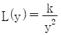
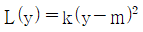
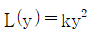
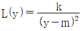
(정답률: 55%)
7. L8(27)형 직교배열표에서 요인 C와 교락되어 있는 요인은?
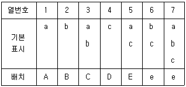
- BC, DE, ABCDE
- AC, ABDE, CDE
- ABCD, AE, BEC
- AB, ACDE, BDE
(정답률: 52%)
8. 다음과 같은 22형 요인배치법에서 SA×B는?
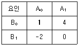
- 0.25
- 6.25
- 12.25
- 18.25
(정답률: 41%)
9. 다음의 표는 요인 A의 수준 4, 요인 B의 수준 3, 요인 C의 수준 2, 반복 2회의 지분실험을 실시한 분산분석표의 일부이다. σ2B(A)의 추정값은?
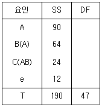
- 1
- 1.5
- 2.5
- 4
(정답률: 44%)
10. 1요인 실험에 의한 다음 데이터에 대하여 분산분석을 할 때, 분산비(F0)의 값은 약 얼마인가?
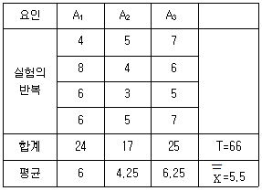
- 3.13
- 3.15
- 3.17
- 3.19
(정답률: 50%)
11. 23형의 1/2일부실시법에 의한 실험을 하기 위해 다음과 같이 블록을 설계하여 실험을 실시하였다. 실험 결과에 대한 해석으로서 틀린 것은?
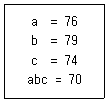
- 요인 A에 별명은 교호작용 B×C이다.
- 블록에 교락된 교호작용은 A×B×C이다.
- 요인 A에 제곱합은 요인 C의 제곱합보다 크다.
- 요인 A의 효과는
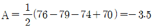
이다.
(정답률: 50%)
12. 3개의 공정 라인(A)에서 나오는 제품이 부적합품률이 같은지 알아보기 위하여 샘플링 검사를 실시하였다. 작업 시간별(B)로 차이가 있는가도 알아보기 위하여 오전, 오후, 야간 근무조에서 공정 라인별로 각각 100개씩 조사하여 다음과 같은 데이터가 얻어졌다. 이 자료를 이용한 B3 수준의 모부적합품률 추정치
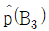
의 값은 몇 % 인가?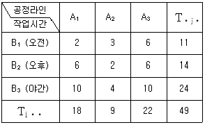
- 5
- 6
- 7
- 8
(정답률: 33%)
13. 1요인 실험에 있어서 각 수준의 합계 A1, A2, …, Aa가 모두 b개의 측정치 합일 경우, 다음 선형식의 대비가 되기 위한 조건식은? (단, ci가 모두 0은 아니다.)
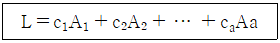
- c1×c2×…×ca = 1
- c1+c2+…+ca = 1
- c1×c2×…×ca = 0
- c1+c2+…+ca = 0
(정답률: 56%)
14. 분산분석표에 표기된 오차분산에 관한 사항으로 틀린 것은?
- 오차분산의 신뢰구간 추정은 χ2분포를 활용한다.
- 오차의 불편분산이 요인의 불편분산보다 클 수는 없다.
- 오차분산은 요인으로서 취급하지 않은 다른 모든 분산을 포함하고 있다.
- 오차분산은 반복 실험을 할 경우 요인의 교호작용을 분리하여 분석할 수 있다.
(정답률: 56%)
15. L27(313)형 선점도에서 A는 1열, B는 5열, C는 2열에 배치할 경우 B×C교호작용은 어느 열에 배치하여야 하는가?
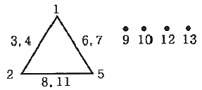
- 3열, 4열
- 6열, 7열
- 8열, 11열
- 9열, 12열
(정답률: 67%)
16. 1요인 실험의 분산분석에서 데이터의 구조모형이 xij = μ + ai + eij로 표시될 때, eij(오차)의 가정이 아닌 것은?
- 비정규성 : eij~N(μ, σe2)에 따르지 않는다.
- 불편성 : 오차 eij의 기대치는 9이고, 편의는 없다.
- 독립성 : 임의의 eij와 eij(
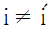
또는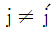
)는 서로 독립이다. - 등분산성 : 오차 eij의 분산은 σe2으로 어떤 i, j에 대해서도 일정하다.
(정답률: 62%)
17. 단일 분할법에서 일차단위가 1요인 실험일 때 A, B는 모수요인이고, 수준수가 각각 l, m 이며, 블록반복 R의 수준수가 r인 경우 평균제곱의 기댓값으로 맞는 것은? (단, 요인 A는 일차단위, 요인 B는 이차단위이다.)
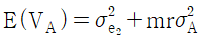
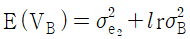
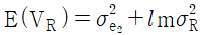
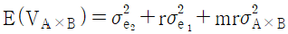
(정답률: 39%)
18. 5수준의 모수요인 A와 4수준의 모수요인 B로 반복 없는 2요인 실험을 한 결과 주효과 A, B가 모두 유의한 경우 최적조합 조건하에서 공정평균을 추정할 때 유효 반복수 ne는?
- 2.5
- 2.9
- 4
- 3
(정답률: 54%)
19. 결정계수(r2)에 관한 설명으로 맞는 것은?
- 회귀방정식의 정도를 측정하는 방법으로 사용될 수 없다.
- 단순회귀에서 결정계수(r2)는 상관계수(r)의 제곱과 값이 다르다.
- 단순회귀분석에서 얻은 r2으로부터 상관계수를 구하면 –r이 된다.
- 0≤r2≤1의 범위에 있고, r2의 값이 1에 가까울수록 쓸모 있는 회귀방정식이 된다.
(정답률: 65%)
20. 모수요인 A는 3수준, 블록요인 B는 2수준으로 난괴법 실험을 실시하여 분석한 결과 다음의 데이터를 얻었다. 요인 A의 수준 A1과 수준 A3간의 모평균 차이의 양측 신뢰구간을 신뢰율 95%로 추정하면 약 얼마인가? (단, t0.975(2) = 4.303, t0.975(5) = 2.571 이다.)
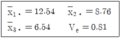
- 6±2.31
- 6±3.28
- 6±3.87
- 6±4.24
(정답률: 37%)
2과목: 통계적품질관리
21. 전수검사와 샘플링검사를 비교한 설명으로 틀린 것은?
- 전수검사에서는 이론적으로 샘플링오차가 발생하지 않는다.
- 부적합품이 로트에 포함될 수 없다면 전수검사로 실행하여야 한다.
- 일반적으로 전수검사는 샘플링검사에 비하여 검사비용이 많이 든다.
- 시료를 랜덤하게 추출할 경우에는 샘플링검사의 결과와 전수검사의 결과가 일치하게 된다.
(정답률: 62%)
22. A, B 두 사람의 작업자가 동일한 기계부품의 길이를 측정한 결과 다음과 같은 데이터가 얻어졌다. A작업자가 측정한 것이 B작업자의 측정치보다 크다고 할 수 있겠는가? (단, α = 0.⑤, t0.95(5) = 2.015 이다.)
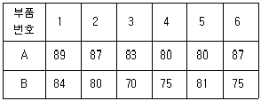
- 데이터가 7개 미만이므로 위험률 5%로는 검정할 수가 없다.
- A작업자가 측정한 것이 B작업자의 측정치보다 크다고 할 수 있다.
- A작업자가 측정한 것이 B작업자의 측정치보다 크다고 할 수 없다.
- 위의 데이터로는 시료크기가 7개 이하이므로 귀무가설을 채택하기에 무리가 있다.
(정답률: 55%)
23. 계수 및 계량 규준형 1회 샘플링검사(KS Q 0001) 중 제3부:계량 규준형 1회 샘플링 검사방식(표준편차 기지)에서 샘플링 검사의 적용 조건으로 틀린 것은?
- 제품을 로트로 처리할 수 있어야 한다.
- 검사단위의 품질을 계량값으로 나타낼 수 있어야 한다.
- 부적합품률을 따르는 경우는 특성치가 정규분포를 하고 있는 것으로 다루어져야 한다.
- 부적합률을 따르는 경우 부적합품률을 어느 한도 내로 보증하는 것이므로 합격 로트 안에 부적합품이 들어가면 안 된다.
(정답률: 47%)
24. 전기 마이크로미터의 정확도를 비교하기 위하여 A, B 2개의 전기 마이크로미터로 크랭크샤프트 5개에 대해 각각 외경을 측정하여 다음의 결과를 얻었다. A, B 간의 차이를 검정하기 위한 검정 통계량은 약 얼마인가?
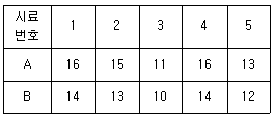
- 1.31
- 3.21
- 3.42
- 6.53
(정답률: 29%)
25. 모상관계수 ρ = 0인 모집단에서 크기 n의 시료를 추출하여 시료의 상관계수(r)를 구한 후, 통계량
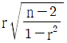
을 취하면, 이 통계량은 어떤 분포를 하는가?- F분포
- t분포
- χ2분포
- 정규분포
(정답률: 50%)
26. 관리도에 타점하는 통계량(statistic)은 정규분포를 한다고 가정한다. 공정(모집단)이 정규분포를 이룰 때에는 표본분포는 언제나 정규분포를 이루지만 공정분포가 정규분포가 아니더라도 표본의 크기 n이 충분히 크다면 정규분포에 접근한다는 이론은?
- 대수의 법칙
- 체계적 추출법
- 중심극한정리
- 크기비례 추출법
(정답률: 55%)
27. 동전을 200번 던져 앞면이 115번, 뒷면이 85번 나타났다. 앞면이 나올 확률은 0.5라는 귀무가설을 유의수준 α = 0.⑤로 검정한 결과로 맞는 것은? (단, χ20.95(1) = 3.84, χ20.975(1) = 5.02 이다.)
- 이 실험결과로는 알 수 없다.
- 앞면이 나올 확률이 1/2이라 볼 수 있다.
- 앞면이 나올 확률이 1/2이 아니라 볼 수 있다.
- 앞면이 나올 확률은 1/2보다 작다고 볼 수 있다.
(정답률: 41%)
28. Shewhart 관리도에서 3σ관리한계를 3.5σ관리한계로 바꿀 경우 나타나는 현상으로 맞는 것은?
- 제1종의 오류 α가 감소한다.
- 제2종의 오류 β가 감소한다.
- 제1종의 오류 α와 제2종의 오류 β가 모두 증가한다.
- 제1종의 오류 α와 제2종의 오류 β가 모두 감소한다.
(정답률: 50%)
29. 각 50개씩의 부품이 들어 있는 10상자의 로트가 있을 때 각 10상자에서 일부를 구분하여 랜덤하게 샘플링하는 방법은?
- 집락 샘플링
- 유의 샘플링
- 층별 샘플링
- 다단계 샘플링
(정답률: 49%)
30. 다음은 두 개의 층 A, B의 데이터로 작성한
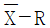
관리도로부터 층의 평균치 차이를 검정할 때 사용하는 식이다. 이 식의 전제조건이 아닌 것은?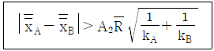
- kA, kB는 충분히 클 것
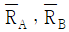
간에 유의차가 없을 것- 두 개의 관리도는 관리상태에 있을 것
- 두 관리도의 부분군의 크기가 충분히 클 것
(정답률: 38%)
31. 계수형 샘플링검사 절차-제1부:로트별 합격품질한계(AQL) 지표형 샘플링검사방식(ISO KS Q 2859-1)에서 전환 규칙 중 전환점수를 적용하여야 할 경우는?
- 수월한 검사에서 보통 검사로
- 보통 검사에서 수월한 검사로
- 보통 검사에서 까다로운 검사로
- 까다로운 검사에서 보통 검사로
(정답률: 41%)
32. A, B 두 직조공정을 병행하여 가동하고 있다. A공정에서는 직물 10000m에 대하여 부적합수가 10개, B공정에서는 같은 길이의 직물에서 부적합수가 20개 있었다. 유의수준 0.⑤로 검정하고자 할 때, A공정의 부적합수는 B공정보다 적다고 할 수 있는가?
- A공정은 B공정과 같다고 할 수 있다.
- A공정의 부적합수는 B공정보다 적다고 할 수 있다.
- A공정의 부적합수는 B공정보다 적다고 할 수 없다.
- A공정과 B공정의 부적합수는 서로 비교할 수 없다.
(정답률: 46%)
33. 계수형 축차 샘플링검사 방식(KS Q ISO 28591:2017)에서 합격판정치(A)와 불합격판정치(R)이 다름과 같이 주어졌을 때, 어떤 로트에서 1개씩 채취하여 5번째와 40번째가 부적합품일 경우, 40번째에서 로트에 대한 조처로서 맞는 것은? (단, 중지 시 누적 샘플크기(중지값) nt = 226 이다.)
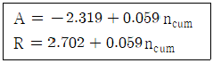
- 검사를 속행한다.
- 로트를 합격으로 한다.
- 로트를 불합격으로 한다.
- 아무 조처도 취할 수 없다.
(정답률: 49%)
34.
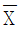
관리도에서 관리한계를 벗어나는 점이 많아지고 있을 때의 설명으로 맞는 것은? (단, R관리도는 안정상태, 군내변동 : σ2w, 군간변동 : σ2b 이다.)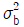
가 크게 되어,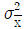
도 크게 된다.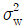
가 크게 되어,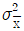
도 크게 된다.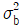
가 작게 되고,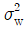
도 크게 된다.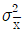
가 작게 되고,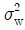
도 크게 된다.
(정답률: 46%)
35. 확률분포에 관한 설명으로 틀린 것은?
- 불편분산 V의 기대치는 모분산 σ2보다 크다.
- 자유도 ν인 t분포를 따르는 확률변수 T의 기댓값은 0이다.
- 범위 R을 이용하여 모표준편차를 추정하는 경우 공식으로
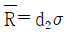
를 사용할 수 있다. - 상호독립인 불편분산 VA와 VB의 분산비 VB/VA는 자유도 νB와 νA를 가진 F분포를 따른다.
(정답률: 35%)
36. Rs 관리도의 관리상한을 다음의 관리도용 계수표를 사용하여 계산하면 어떻게 되는가? (단,
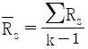
이다.)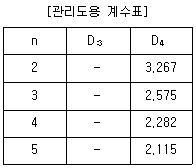
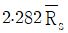
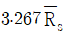
- 알 수 없다.
- 관리상한은 고려하지 않는다.
(정답률: 43%)
37. 계수형 샘플링 검사에 있어서 N, n, c가 주어지고, 로트의 부적합품률 P와 합격확률 L(P)의 관계를 나타낸 것을 무엇이라고 하는가?
- 검사일보
- 검사성적서
- 검사특성곡선
- 검사기준서
(정답률: 54%)
38. u관리도에 대한 설명으로 맞는 것은?
- UCL, LCL은
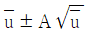
에 의해 구할 수 있다. - UCL, LCL은 c관리도를 이용하면
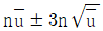
와 같다. - 시료의 면적이나 길이가 일정할 경우에만 사용한다.
- 부적합수 c의 분포는 일반적으로 이항분포를 따른다.
(정답률: 25%)
39. 10개의 배치(Batch)에서 각각 4개씩의 샘플을 뽑아 범위(R)를 구하였더니 ∑R = 16 이었다. 이 때
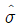
은 얼마인가? (단, 군의 크기가 4 일 때, d2 = 2.⑤9, d3 = 0.880 이다.)- 0.78
- 1.82
- 1.94
- 4.55
(정답률: 33%)
40. 피스톤의 외경을 X1, 실린더의 내경을 X2라 한다. X1, X2는 서로 독립된 확률분포를 따르고, 그 표준편차가 각각 0.⑤, 0.03 이라면 실린더와 피스톤 사이의 간격 X2 - X1의 표준편차는?
- 0.⑤2 - 0.032
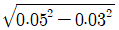
- 0.⑤2 + 0.032
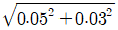
(정답률: 55%)
3과목: 생산시스템
41. 4가지 주문 작업을 1대의 기계에서 처리하고자 한다. 각 작업의 작업시간과 납기가 다음과 같이 주어져 있을 때 여유시간법을 사용하여 작업순서를 결정할 경우, 평균흐름시간은 며칠인가?
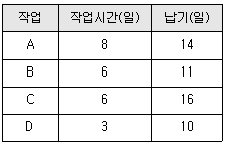
- 13일
- 14일
- 15일
- 16일
(정답률: 39%)
42. 보전작업자가 각 제조부서의 감독자 밑에 있는 보전조직은?
- 부문보전
- 집중보전
- 지역보전
- 절충보전
(정답률: 50%)
43. 생산관리의 변환 시스템 중 Input, 공장 Output의 요소가 적절하게 연결된 것은?
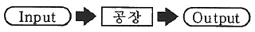
- 재료 – 로트 - 제품
- 프로세스 – 변환 - 제품
- 공정 – 프로세스 - 제품
- 재료 – 프로세스 – 제품
(정답률: 55%)
44. 관측 평균시간 5분, 객관적 레이팅에 의해서 1단계 평가계수 95%, 2단계 조정계수, 15% 여유율 20% 일 경우의 표준시간은 약 몇 분인가?
- 5.09분
- 6.56분
- 7.56분
- 8.39분
(정답률: 47%)
45. 부품 A의 사용량은 하루에 3000개, 평균 준비시간은 0.5일/컨테이너, 가공시간은 0.3일/컨테이너 그리고 컨테이너 한 개에 담을 수 있는 부품 A의 수는 30개, 안전계수 α는 25% 이다. 간판시스템을 운용하는 경우 부품 A를 위해 필요한 간판의 수는?
- 63개
- 100개
- 125개
- 200개
(정답률: 27%)
46. 다중활동분석표의 용도로 거리가 먼 것은?
- 효율적인 작업조 편성
- 작업자의 미세동작 분석
- 기계 혹은 작업자의 유효시간 단축
- 한 명의 작업자가 담당할 수 있는 기계대수의 산정
(정답률: 45%)
47. 적시생산시스템(JIT)에 관한 설명으로 틀린 것은?
- 생산의 평준화로 작업부하량이 균일해진다.
- 생산준비시간의 단축으로 리드타임이 단축된다.
- 간판(Kanban)이라는 부품인출시스템을 사용한다.
- 입력정보로 재고대장, 주일정계획, 자재명세서가 요구된다.
(정답률: 47%)
48. 생산경영관리에서 구매의 효과를 측정하는 객관적 척도를 나타낸 것으로 거리가 가장 먼 것은?
- 예산 절감액
- 납기 이행실적
- 구매물품의 품질
- 거래업체의 수
(정답률: 47%)
49. 다품종소량 생산의 특징이 아닌 것은?
- 단위당 생산원가는 낮다.
- 범용설비에 의한 생산이 주가 된다.
- 주로 노동집약적 생산공정에 속한다.
- 진도관리가 어렵고 분산작업이 이루어진다.
(정답률: 51%)
50. 포드 시스템과 관련이 없는 것은?
- 과업관리
- 컨베이어
- 동시작업
- 고임금, 저가격
(정답률: 47%)
51. 생산계획을 집행하는 단계로서 생산계획을 세분화하여 작업계획을 시간단위로 구체화시키는 활동은?
- 일정계획
- 재고통제
- 작업설계
- 라인밸런싱
(정답률: 47%)
52. 생산계획을 위한 제품조합에서 A제품의 가격이 2000원, 직접재료비 500원, 외주가공비 200원, 동력 및 연료비가 50원일 때 한계이익률은?
- 37.5%
- 62.5%
- 65.0%
- 75.0%
(정답률: 45%)
53. 불확실성하에서의 의사결정 기준에 대한 설명으로 틀린 것은?
- MaxiMin 기준 : 가능한 최소의 성과가 가장 큰 대안을 선택
- Laplace 기준 : 가능한 성과의 기대치가 가장 큰 대안을 선택
- Hurwicz 기준 : 기회손실의 최대값이 최소화되는 대안을 선택
- MaxiMax 기준 : 가능한 최대의 성과를 최대화하는 대안을 선택
(정답률: 38%)
54. MRP 과정에서 품목의 순소요량이 산출되면 로트 사이즈를 결정해야 한다. 로트 사이즈 결정방법에 대한 설명으로 틀린 것은?
- 고정주문량(fixed order quantity) 방법은 주문할 때마다 주문량은 동일하게 된다.
- 대응발주(lot for lot) 방법은 순소요량만큼 발주하나 초과 재고가 나타난다.
- 부분기간(part period algorithm) 방법은 주문비와 재고유지비의 균형점을 고려하여 주문한다.
- 기간발주량(period order quantity) 방법은 사전에 결정된 시간간격마다 주문을 실시하되, 로트 사이즈는 주문할 때마다 이 기간 중의 소요량만큼 발주한다.
(정답률: 42%)
55. 총괄생산계획(APP)의 문제를 경험적 또는 탐색적 방법으로 해결하려는 기법은?
- 선형계획법(LP)
- 선형결정규칙(LDR)
- 도시법(Graphic method)
- 휴리스틱기법(Heuristic approach)
(정답률: 44%)
56. 수요의 추세변화를 분석할 경우에 가장 적합한 방법은?
- 상관분석법
- 이동평균법
- 지수평활법
- 최사자승법
(정답률: 27%)
57. 방향에 맞도록 목표물을 돌려놓거나 위치를 잡아놓기로서 운반동작 중 바로 놓을 수도 있는 서블릭 기호는?
- PP
- G
- P
- H
(정답률: 33%)
58. 워크샘플링 기법을 이용하여 표준시간을 결정하기 적합한 작업유형으로 맞는 것은?
- 주기가 짧고 반복적인 작업
- 주기가 짧고 비반복적인 작업
- 주기가 길고 비반복적인 작업
- 작업 공정과 시간이 고정된 작업
(정답률: 45%)
59. 가공조립산업에서 시간가동률을 저해시켜 설비종합효율을 나쁘게 하는 로스(loss)는?
- 초기수율로스
- 속도저하로스
- 작업준비·조정로스
- 잠깐정지·공회전로스
(정답률: 33%)
60. 제품별 배치와 비교할 때 공정별 배치의 장점이 아닌 것은?
- 단위당 생산시간이 짧다.
- 범용설비가 많아 시설투자 측면에서 비용이 저렴하다.
- 한 설비의 고장으로 인해 전체 공정에 미치는 영향이 적다.
- 수요변화와 제품변경 등에 대응하는 제조부문의 유연성이 크다.
(정답률: 37%)
4과목: 신뢰성관리
61. 고장율 λ = 0.07/시간, 수리율 μ = 0.5/시간 일 때, 가용도(Availability)는 약 몇 % 인가?
- 12.33
- 14.02
- 87.72
- 88.10
(정답률: 50%)
62. 평균 고장률이 0.002/시간인 지수분포를 따르는 제품을 10시간 사용하였을 경우 고장이 발생할 확률은 약 얼마인가?
- 0.02
- 0.20
- 0.80
- 0.98
(정답률: 45%)
63. 평균수명이 1000시간 정도 되는지를 판정하기 위해 샘플을 20개로 하여 고장 난 것은 즉시 새 것으로 교체하면서 4번째 고장이 발생할 때까지 시험하고자 한다. 4번째 고장시간이 얼마여야 평균수명을 1000시간으로 추정할 수 있겠는가?
- 100시간
- 200시간
- 400시간
- 600시간
(정답률: 42%)
64. 부품의 수명분포가 가장 많이 활용되는 지수분포에 관한 설명으로 틀린 것은?
- 부품 고장율의 역수가 MTTF 이다.
- 중고부품이나 새 부품이나 신뢰도는 동일하다.
- 부품 3개가 직렬로 연결된 시스템의 MTTF는 부품 MTTF의 1/3 이다.
- 부품 3개가 병렬로 연결된 시스템의 MTTF는 부품 MTTF의 3배이다.
(정답률: 42%)
65. 그림은 고장시간의 전형적 분포를 보여주는 욕조곡선이다. 이 중 B기간을 분포로 모형화할 때, 어떤 분포가 적절한가?
- 정규분포
- 지수분포
- 형상모수가 1보다 큰 와이블 분포
- 형상모수가 1보다 작은 와이블 분포
(정답률: 52%)
66. 그림의 신뢰성 블록도에 맞는 FT(Fault Tree, 고장목)도는?
(정답률: 44%)
67. 수명시험 중 특히 수명시간을 단축할 목적으로 고장 메카니즘을 촉진하기 위해 가혹한 환경조건에서 행하는 시험은?
- 환경시험
- 정상수명시험
- screening시험
- 가속수명시험
(정답률: 53%)
68. 고장평점법에서 평점요소로 기능적 고장영향의 중요도(C1), 영향을 미치는 시스템의 범위(C2), 고장발생빈도(C3)를 평가하여 평가점을 C1 = 3, C2 = 9, C3 = 6을 얻었다면, 고장평점(Cs)는 약 얼마인가?
- 4.45
- 5.45
- 8.72
- 12.72
(정답률: 43%)
69. 신뢰성 축차샘플링 검사에서 사용되는 공식 중 틀린 것은?
(정답률: 40%)
70. 일반적으로 신뢰도 계산을 할 때 샘플의 수가 적은 경우 사용하는 방법이 아닌 것은?
- 평균순위법
- 메디안순위법
- 모드순위법
- 표준편차순위법
(정답률: 43%)
71. 신뢰성 데이터 해석에 사용되는 확률지 중 가장 널리 사용되는 와이블 확률지에 대한 설명으로 틀린 것은?
- E(t)는 으로 계산한다.
- 메디안순위법으로 계산할 경우 F(t)는 로 계산한 값을 타점한다.
- 모수 m의 추정은 의 값이다.
- η의 추정은 타점의 직선이 F(t) = 63%인 선과 만나는 점의 하측 눈금(t 눈금)을 읽은 값이다.
(정답률: 38%)
72. 어떤 기계의 보전도 M(t)가 지수분포를 따르고, 1시간 동안의 보전도가 M(1) = 1-e-2×1가 되었다면 MTTR(평균수리시간)은?
- 0.5
- 1.0
- 1.5
- 2.0
(정답률: 43%)
73. 동일한 부품을 사용하는 5대의 기계를 200시간 동안 작동시켜 그 부품의 고장을 관찰하였다. 다음 표는 그 부품이 고장 났던 시간들이다. 이 부품의 고장분포는 지수분포라 하고, 고장 즉시 동일한 것으로 교체되었다. 이 부품의 평균고장시간 MTBF는?
- 550/6
- 950/6
- 1000/6
- 200
(정답률: 31%)
74. 부품의 고장률이 각각 λ1 = 0.01, λ2 = 0.04로 고정된 고장률일 경우에 두 부품이 병렬로 연결된 시스템의 MTBF는 약 얼마인가?
- 90
- 95
- 100
- 1⑤
(정답률: 43%)
75. 3개의 부품 B1, B2, B3로 이루어진 직렬구조의 시스템이 있다. 서브시스템 B1, B2, B3의 고장률이 각각 0.002, 0.0⑤, 0.004(회/시간)로 알려져 있을 때, 20시간에서 시스템의 신뢰도를 0.9 이상이 되도록 하려면 서브시스템 B1에 배분되어야 할 고장률은 약 얼마인가?
- 0.00096/시간
- 0.00176/시간
- 0.0⑤27/시간
- 0.18182/시간
(정답률: 29%)
76. n개의 부품이 직렬구조로 구성된 시스템이 있다. 각 부품의 수평분포가 지수분포를 따르며, 각 부품의 평균수명이 MTBF로 동일할대, 이 직렬구조시스템의 평균수명은?
(정답률: 43%)
77. 용어-신인성 및 서비스 품질(KS A 3004)에서 정의하고 있는 고장에 관한 용어 중 아이템의 사용시간 또는 사용횟수의 증가에 따라 요구기능이 부분 고장이면서 점진적인 고장을 나타내는 용어는?
- 열화고장
- 돌발고장
- 취약고장
- 일차고장
(정답률: 51%)
78. 와이블 분포에서 형상모수값이 2일 때 고장률에 대한 설명 중 맞는 것은?
- 일정하다.
- 증가한다.
- 감소한다.
- 증가하다 감소한다.
(정답률: 52%)
79. 각 요소의 신뢰도가 0.9인 2 out of 3 시스템(3 중 2 시스템)의 신뢰도는?
- 0.852
- 0.951
- 0.972
- 0.990
(정답률: 47%)
80. 부품에 가해지는 부하(x)는 평균 25000, 표준편차 4272인 정규분포를 따르며, 부품의 강도(y)는 평균 50000이다. 신뢰도 0.999가 요구될 때 부품강도의 표준편차는 약 얼마인가? (단, P(z＞-3.1) = 0.999 이다.)
- 3680
- 6840
- 7860
- 9800
(정답률: 41%)
5과목: 품질경영
81. 공차를 수식으로 올바르게 표현한 것은?
- 기준치수 + 규격 허용차
- 최대허용치수 - 기준치수
- 규격상한치수 - 규격하한치수
- 최대허용치수 + 최소허용치수
(정답률: 45%)
82. 품질경영시스템-기본사항과 용어(KS Q ISO 9000:2015)에 정의된 용어의 설명으로 맞는 것은?
- 품질매뉴얼 : 요구사항을 명시한 문서
- 품질계획서 : 조직의 품질경영시스템에 대한 시방서
- 시정조치 : 잠재적 부적합 또는 기타 원하지 않는 잠재적 상황의 원인을 제거하기 위한 조치
- 특채 : 규정된 요구사항에 적합하지 않는 제품 또는 서비스를 사용하거나 불출하는 것에 대한 허가
(정답률: 31%)
83. 외부업체 관리 비용, 신뢰성 시험비용, 품질기술 비용, 품질관리 교육비용 등과 관련된 품질비용은?
- 예방코스트
- 평가코스트
- 내부실패코스트
- 외부실패코스트
(정답률: 48%)
84. 제조공정에 관한 사내표준화의 요건을 설명한 것으로 가장 적절하지 않은 것은?
- 실행가능성이 있는 것일 것
- 내용이 구처젝이고 객관적일 것
- 내용이 신기술이나 특수한 것일 것
- 이해관계자들의 합의에 의해 결정되어야 할 것
(정답률: 59%)
85. 부적합품 손실금액, 부적합품수, 부적합수 등을 요인별, 현상별, 공정별, 품종별 등으로 분류해서 크기의 순서대로 차례로 늘어놓는 그림은?
- 산점도
- 파레토도
- 그래프
- 특성요인도
(정답률: 47%)
86. 품질전략을 수립할 때 계획단계(전략의 형성단계)에서 SWOT분석을 많이 활용하고 있다. 여기서 O는 무엇을 뜻하는가?
- 기회
- 위협
- 강점
- 약점
(정답률: 57%)
87. 시험 장소의 표준 상태(KS A 0006)에 정의된 상온, 상습의 기준으로 맞는 것은?
- 온도 : 0~20℃, 습도 : 60~70%
- 온도 : 5~35℃, 습도 : 45~85%
- 온도 : 10~40℃, 습도 : 55~75%
- 온도 : 15~35℃, 습도 : 30~70%
(정답률: 42%)
88. 다음의 제품의 유통과정에서 제조물 책임의 면책대상자로 볼 수 있는 자는?
- A
- B
- C
- D
(정답률: 45%)
89. 4개의 PCB 제품에서 각 제품마다 10개를 측정했을 때, 부적합수가 각각 2개, 1개, 3개, 2개가 나왓다. 이때 6시그마 척도인 DPMO(Defects Per Million Oppoptunities)는?
- 0.2
- 2.0
- 200000
- 800000
(정답률: 50%)
90. 국가품질상의 심사범주에 해당되지 않는 것은?
- 리더십
- 시스템관리 중시
- 전략기획
- 고객과 시장중시
(정답률: 26%)
91. 품질보증시스템 운영과 거리가 가장 먼 것은?
- 품질시스템의 피드백 과정을 명확하게 해야 한다.
- 처음에 품질시스템을 제대로 만들어 가능한 변경하지 않아야 한다.
- 품질시스템운영을 위한 수단·용어·운영 규정이 정해져야 한다.
- 다음 단계로서의 진행 가부를 결정하기 위한 평가항목, 평가방법이 명확하게 제시되어야 한다.
(정답률: 58%)
92. 측정오차의 발생원인 중 측정오차에 가장 큰 영향을 미치는 요인은?
- 측정기 자체에 의한 오차
- 측정하는 사람에 의한 오차
- 측정방법의 차이에 의한 오차
- 외부적인 환경영향에 의한 오차
(정답률: 39%)
93. 규격상한이 70, 규격하한이 10인 어떤 제품을 제조하는 제조공정에서 만들어진 제품의 표준편차는 7.5이다. 이 제조공정이 관리상태에 있다고 할 때 공정능력지수(Cp)는 약 얼마인가?
- 0.66
- 1.00
- 1.33
- 2.67
(정답률: 52%)
94. 어떤 문제에 대한 특성과 그 요인을 파악하기 위한 것으로 브레인스토밍이 많이 사용되는 개선활동 기법은?
- 층별(stratification)
- 체크시트(check sheet)
- 산점도(scatter diagram)
- 특성요인도(cause & effect diagram)
(정답률: 48%)
95. 고객의 요구와 기대를 규명하고 이들을 설계 및 생산 사이클을 통하여 목적과 수단이 계열을 따라 계통적으로 전개되는 포괄적인 계획화과정을 무엇이라 하는가?
- 연관도법
- PDPC법
- 친화도법
- 품질기능전개
(정답률: 43%)
96. Kirkpatrick의 총품질코스트 이론에서 제품의 품질을 규격과 비교하여 분석·시험·검사함으로써 회사의 품질수준을 유지하는데 소요되는 코스트와 설명으로 맞는 것은?
- 평가코스트 – 적합품질 향상에 따른 감소하는 품질비용
- 예방코스트 – 적합품질 향상에 따른 증가하는 품질비용
- 실패코스트 – 적합품질 향상에 따른 감소하는 품질비용
- 품질코스트 – 적합품질 향상에 따른 감소하다가 증가하는 품질비용
(정답률: 34%)
97. 신 QC 7가지 기법 중 장래의 문제나 미지의 문제에 대해 수집한 정보를 상호 친화성에 의해 정리하고, 해결해야 할 문제를 명확히 하는 방법은?
- KJ법
- 계통도법
- PDPC법
- 연관도법
(정답률: 38%)
98. 파이겐바움(Feigenbaum)이 분류한 품질관리부서의 하위 기능 부문 3가지에 해당되지 않는 것은?
- 원가관리기술부분
- 품질관리기술부분
- 공정관리기술부분
- 품질정보기술부분
(정답률: 34%)
99. 표준은 단체표준, 국가표준, 지역표준, 국제표준 등으로 구분될 수 있다. 국가표준에 속하지 않은 것은?
- BS
- DIN
- ANSI
- ASME
(정답률: 42%)
100. 표준화란 어떤 표준을 정하고 이에 따르는 것 또는 표준을 합리적으로 설정하여 활용하는 조직적인 행위이다. 표준화의 원리에 해당되지 않는 것은?
- 규격은 일정한 기간을 두고 검토하여 필요에 따라 개정하여야 한다.
- 표준화란 본질적으로 전문화의 행위를 위한 사회의 의식적 노력의 결과이다.
- 규격을 제정하는 행동에는 본질적으로 선택과 그에 이어지는 과정이다.
- 표준화란 경제적, 사회적 활동이므로 관계자 모두의 상호협력에 의하여 추진되어야 할 것이다.
(정답률: 41%)